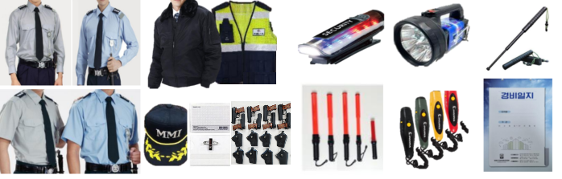

야간 순찰 · 기록
야간 순찰 · 기록Overview
사람을 세워두는 경비가 아니라,
사람을 세워두는 경비가 아니라,
운영되는 경비
현장 점검으로 위험요인과 출입 동선을 먼저 파악하고, 그에 맞는 인원과 근무편성을 설계합니다. 근무자는 매뉴얼에 따라 일하고, 모든 순찰과 인수인계는 기록으로 남습니다.
주요 대상
공장 · 산업시설공동주택업무시설
- 외부인 · 차량 · 방문객 · VIP 출입 관리
- 주 · 야간 교대와 거점 근무, 정기 순찰
- 비상 대응과 보안시스템 운영
- 이상사항 즉시 보고와 기록 유지
Scope
경비 서비스 수행 범위
다섯 가지 핵심 업무를 현장 매뉴얼로 표준화해 운영합니다.
ACCESS
출입 통제
외부인 · 차량 · 방문객 · VIP 출입 기준을 현장 매뉴얼로 운영합니다.
PATROL
교대 · 순찰
근무편성표에 따라 거점 근무와 순찰을 연속 배치하고 주 · 야간 인수인계를 관리합니다.
PREVENTION
위험 예방
시설 이상, 우천, 안전운행 등 위험요인을 사전에 파악해 공유합니다.
TRAINING
교육 · 서비스
복장, 친절 응대, 비상대응, 보안의식 교육을 정기적으로 실시합니다.
REPORT
기록 · 보고
이상사항은 즉시 보고하고 순찰 · 점검 · 인수인계 기록을 유지합니다.
GOAL
보안 공백 최소화
계획된 배치, 끊김 없는 교대, 남는 기록. 경비 서비스가 지향하는 단 하나의 결과입니다.
24H Operation현장점검부터 안전교육까지,
현장점검부터 안전교육까지,
24시간 체계적으로
12시간 격주 근무조와 24시간 교대 근무조를 현장에 맞게 편성하고, 휴게시간까지 계획해 공백 없는 근무를 만듭니다.
현장에 맞는 인력 배치
현장점검을 통해 전문인력을 배치하고 체계적인 근무편성으로 공백 없는 경비 운영을 실현합니다.
업무분장 · 보고 체계 구축
명확한 업무 배정과 현장 이슈 · 민원 처리, 본사 운영관리로 체계적인 운영시스템을 구축합니다.
장비와 안전교육
근무복 · 방한복 · 경광봉 · 무전기 등 현장 장비를 갖추고 안전교육을 병행합니다.
 보안시스템 · 관제 운영
보안시스템 · 관제 운영
STEP 01인력 배치
STEP 02현장 점검
STEP 03즉시 보고
STEP 04조치 · 개선
More services
함께 운영하면 더 효율적입니다

Contact현장의 고민,
현장의 고민,
먼저 들어보겠습니다.
현장 진단부터 운영 제안까지, 연우파트너스가 직접 찾아갑니다.